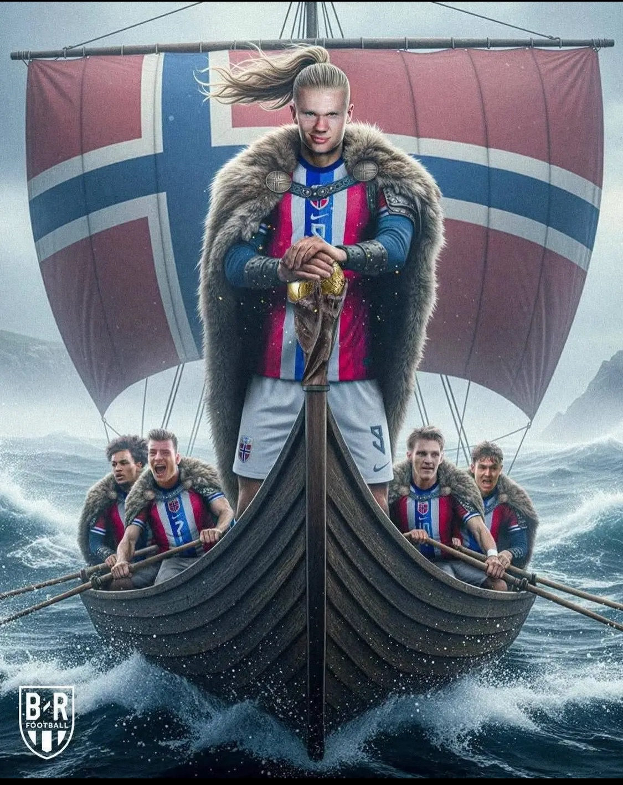

My test site
responsivt design
Norges nye gullalder
Det norske herrelandslaget i fotball er inne i en av sine mest spennende perioder
noensinne. Etter mange år med motgang og nesten-kvalifiseringer, har laget under ledelse
av Ståle Solbakken endelig brutt barrieren og kvalifisert seg til VM 2026 i Nord-Amerika.
Dette er Norges første deltakelse i et verdensmesterskap siden 1998.
Laget er bygget rundt to av verdens største fotballstjerner: kaptein Martin Ødegaard, som styrer midtbanen med sin tekniske eleganse,
og målmaskinen Erling Braut Haaland. Haaland har allerede knust den norske målrekorden og regnes som en av de mest fryktede spissene globalt.
Sammen med profiler som Oscar Bobb, Antonio Nusa og Julian Ryerson, har Norge utviklet en mer offensiv og moderne spillestil.
Veien videre Etter en knallsterk kvalifisering og opprykk til øverste nivå i Nations League, reiser Norge til VM med stor selvtillit.
I gruppespillet sommeren 2026 møter de Frankrike, Senegal og en playoff-vinner. For en hel nasjon av fotballsupportere har håpet om
en ny «Drillo-æra» blitt erstattet av troen på Solbakkens mannskap. Med en blanding av rutine og ungt talent er målet ikke lenger
bare å delta, men å bite fra seg mot verdens beste nasjoner.

Gå til nrk her!